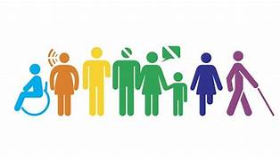
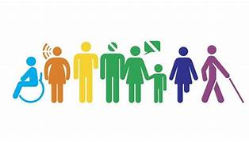

Legislação Educacional
O Direito Educacional corresponde ao conjunto de normas que regulamentam a educação no Brasil, alinhado à Constituição Federal, à LDB (Lei de Diretrizes e Bases da Educação – Lei 9.394/1996) e às políticas públicas que garantem o acesso, permanência e qualidade do ensino.
Direitos da Estudante Gestante
Conforme a Lei nº 6.202/1975, estudantes gestantes têm direito à licença-maternidade acadêmica e a atividades domiciliares a partir do 8º mês de gestação — ou antes, mediante recomendação médica.
- Realização de trabalhos em casa;
- Garantia de avaliações domiciliares;
- Direito à continuidade dos estudos;
- Nenhum prejuízo acadêmico.
Padrão de Qualidade
A Constituição Federal, art. 206, garante que a educação deve ser ofertada com padrão de qualidade, assegurando estrutura adequada, docentes qualificados e recursos pedagógicos suficientes.
Saiba maisImagens e Vídeos
 
